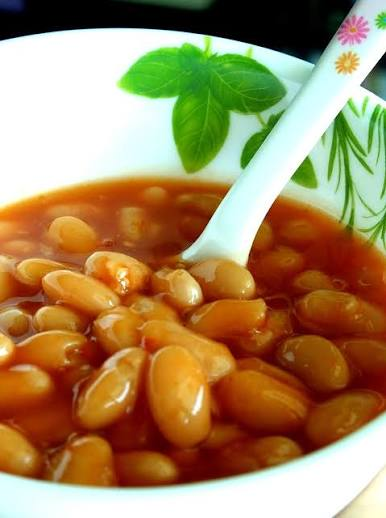

Beans

Description
This cowboy beans recipe delivers a hearty dish of beans, ground beef, and bacon in a sweet and tangy sauce.
Ingredients
- Meat
- Beans
- Onions
- Ketchup
- Brown Sugar
- Mustard
Steps
- Gather all ingredients.
- Heat a large skillet over medium-high heat. Add ground beef and bacon; cook and stir until beef is browned
and crumbly, 7 to 10 minutes.
- Transfer ground beef and bacon to a slow cooker; stir in onions, baked beans with pork, kidney beans, lima
beans, ketchup, brown sugar, and mustard.
- Cover the slow cooker. Cook on Low until thickened and bubbling, at least 3 hours.
Home